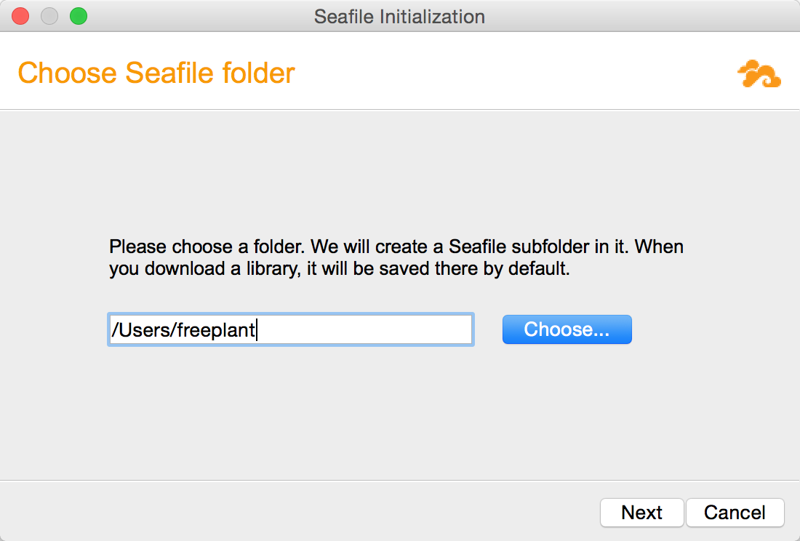
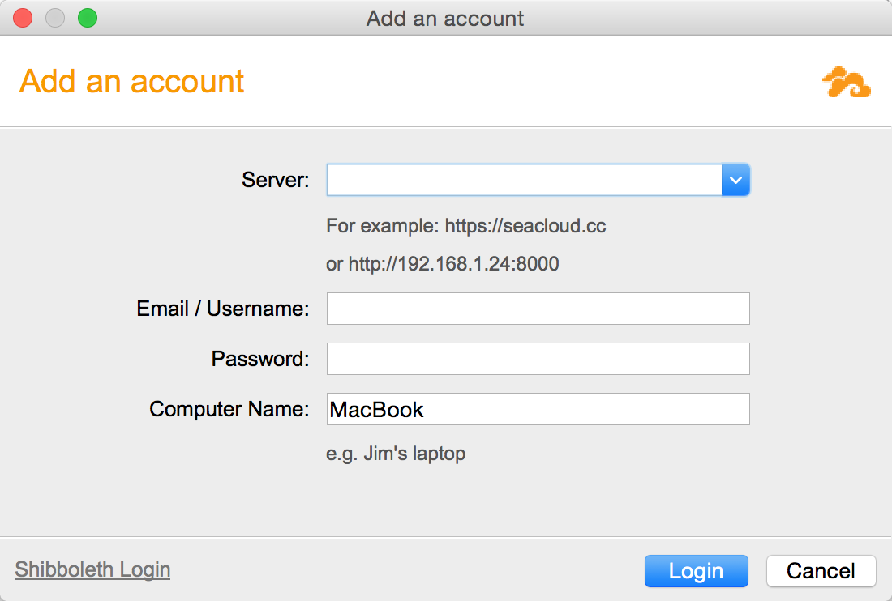
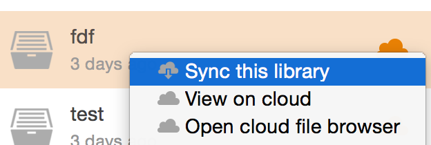
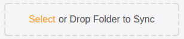
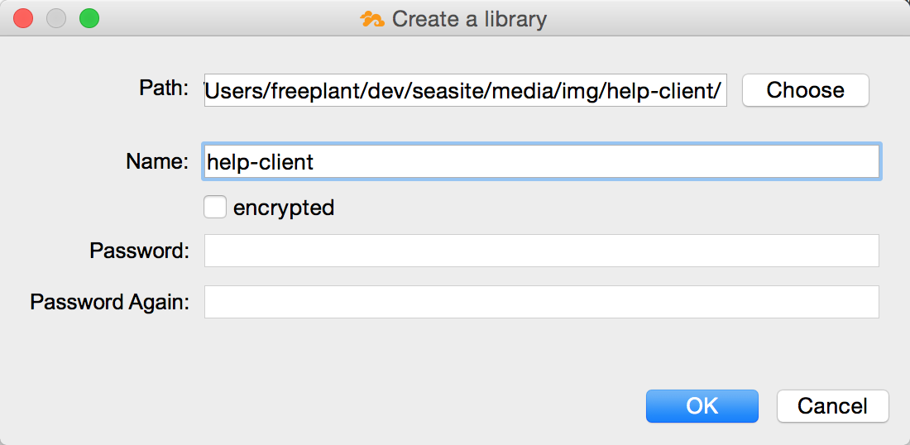
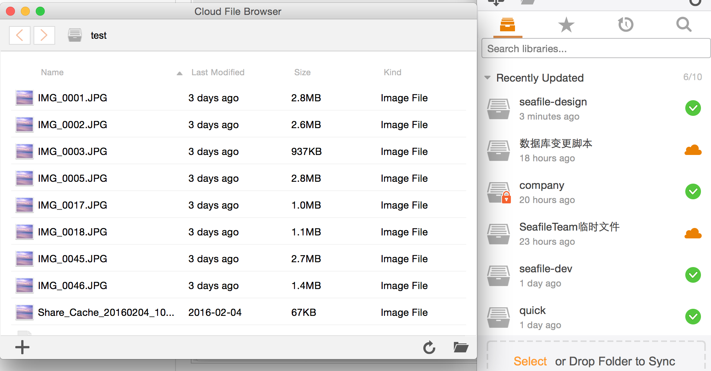

Installing Seafile Client Program¶
After downloading Seafile client program, you have 3 steps left to get it up and running.
1. Select a disk partition to store local Seafile data¶

2. Add an account¶
Add an account on your private Seafile server or our public server.

3. Sync a library¶
- Click the "Sync this library" button to sync it with a local folder.
- Then you add some files into the library. They will be automatically synced with cloud platform.

4. (Optional) Create a library¶
You can also create a library from a local folder.


5. Browse files on the cloud¶
In some occasions, you want to modify files on the cloud directly without syncing them. Seafile client comes with a "cloud file browser" to meet this need. Click an unsynced library will open the cloud file browser.
